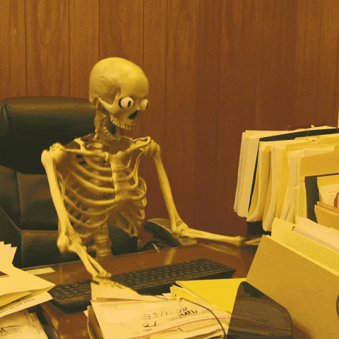

Фритрек и нулевой спринт: Подготовка к работе
</HTML>

Это было самое начало пути. На этом этапе важно было проникнуться основами и настроиться на учёбу. И, возможно, подумать, как новые знания могут повлиять на ваше будущее.
Наверно самое трудное время. Сразу после начала обучения я решил сменить основную работу, поэтому в итоге пришлось вникать параллельно в два новых для себя мира. Времени не хватало даже поспать.